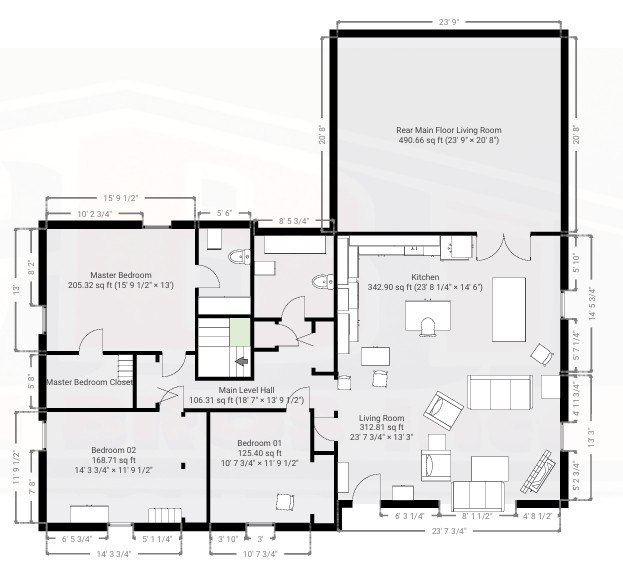
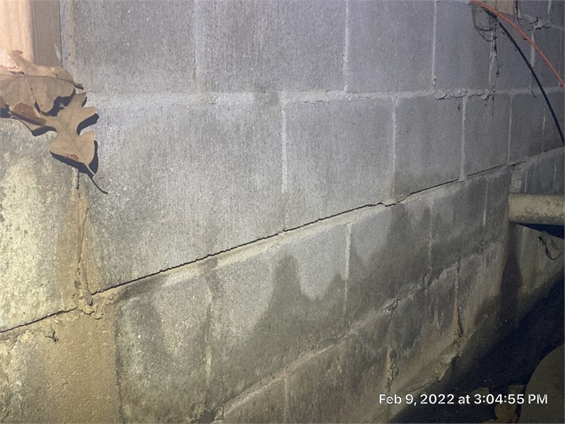
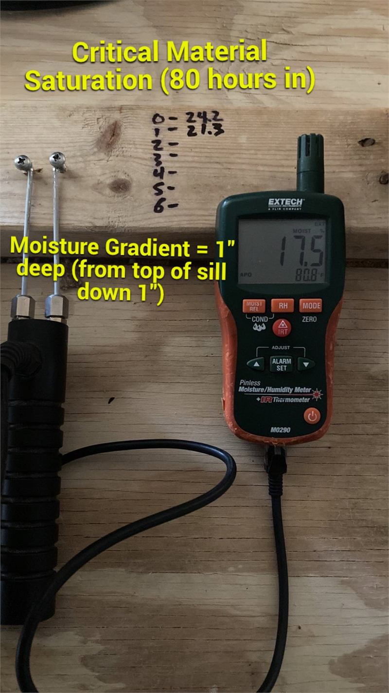
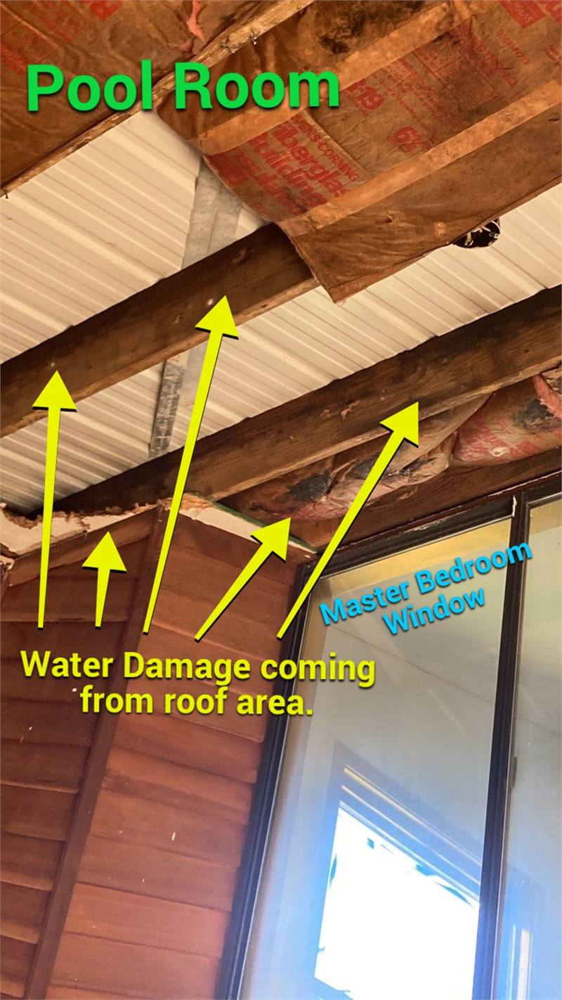
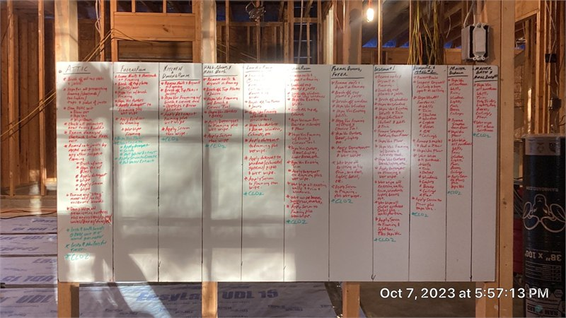
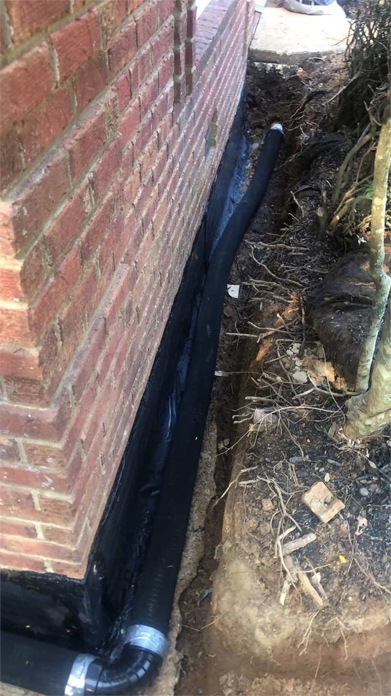

Each property and problem is different. These six steps show how observations, measurements, documentation, and planning can move an unresolved building condition toward a corrective direction. The photographs illustrate different aspects of the process and do not all represent one property or one project.

Step 1: Document the Building and Existing Conditions
An investigation begins by establishing the physical context. Room relationships, dimensions, openings, fixtures, affected areas, construction assemblies, and surrounding conditions create a common reference for observations and repair planning.

Step 2: Inspect the Visible Condition
A crack, stain, displaced component, wet surface, or damaged finish may reveal where a problem became visible, but the visible location may not be where the problem originated. Visible damage starts the investigation. It does not automatically finish the diagnosis.

Step 3: Measure Conditions Instead of Guessing
Moisture readings, dimensions, elevations, temperatures, material conditions, and other project-specific measurements can help establish the extent and behavior of a building problem.

Step 4: Trace the Damage Back to Its Source
Building damage may appear away from the point where the problem began. Tracing the path helps distinguish damaged material from the condition that damaged it, which affects whether the repair only restores finishes or also corrects the source.

Step 5: Develop the Scope and Work Sequence
Findings must become an organized scope that identifies affected areas, required work, dependencies between trades, building-code considerations, material requirements, sequencing, and the conditions that must be addressed before finishes are restored.

Step 6: Design Corrective Work That Addresses the Cause
Diagnosis should change what gets built. Corrective work may involve restoration, drainage, waterproofing, foundation work, reconstruction, trade coordination, or another solution selected from the actual findings.